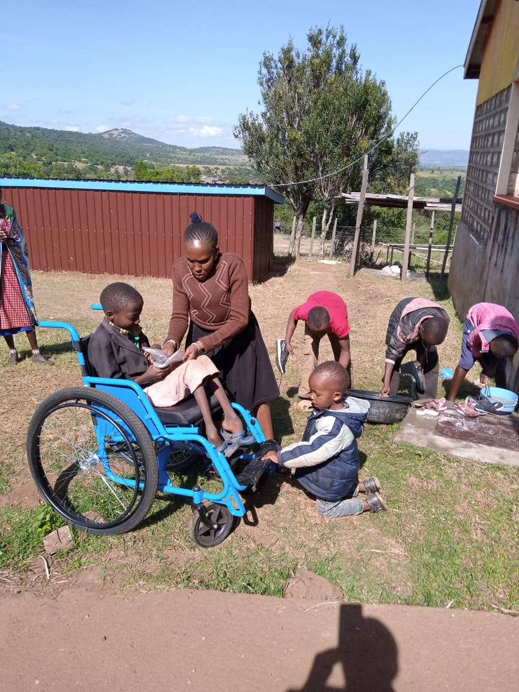
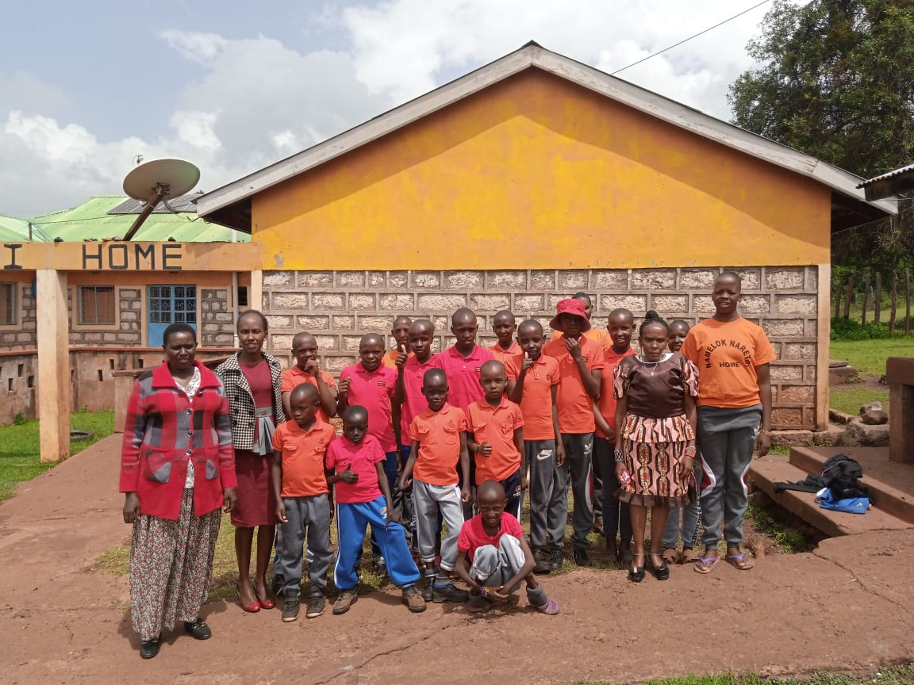
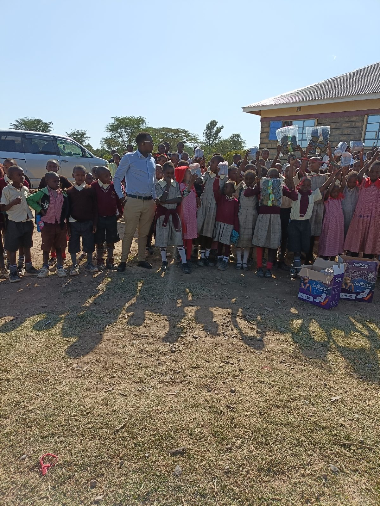
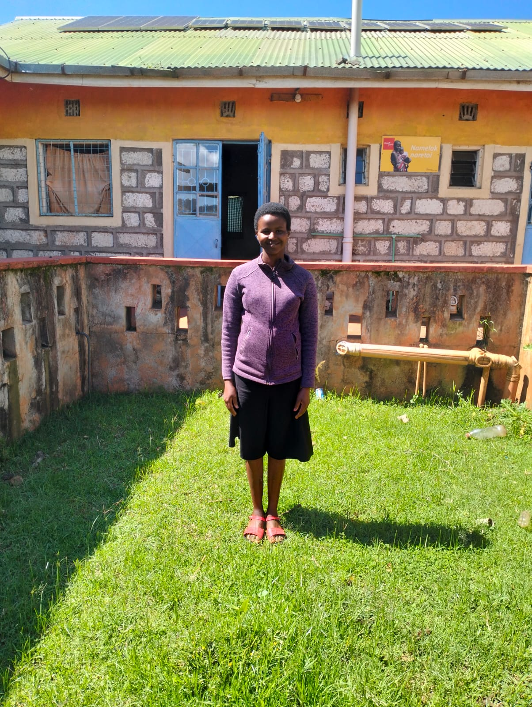
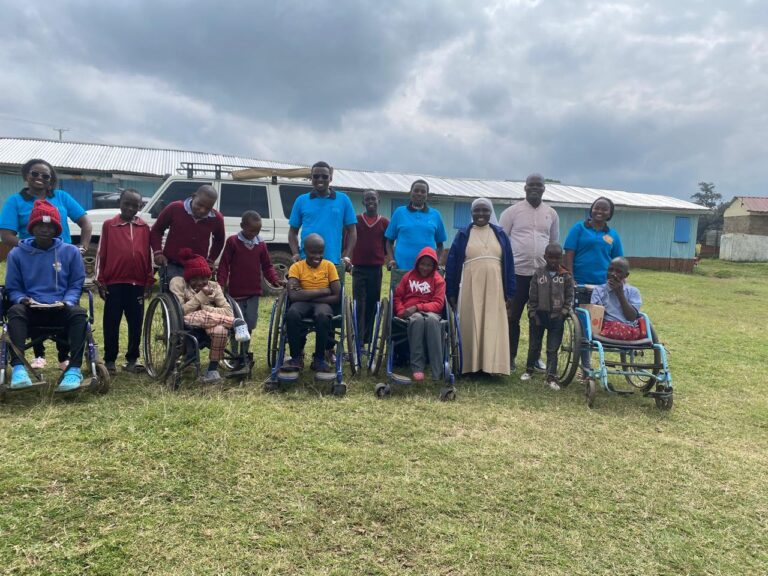
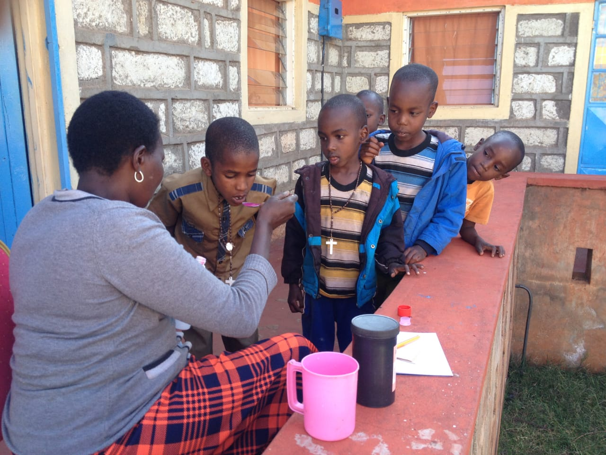
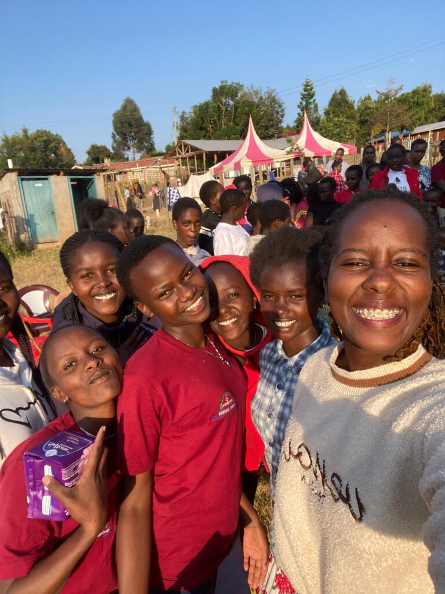
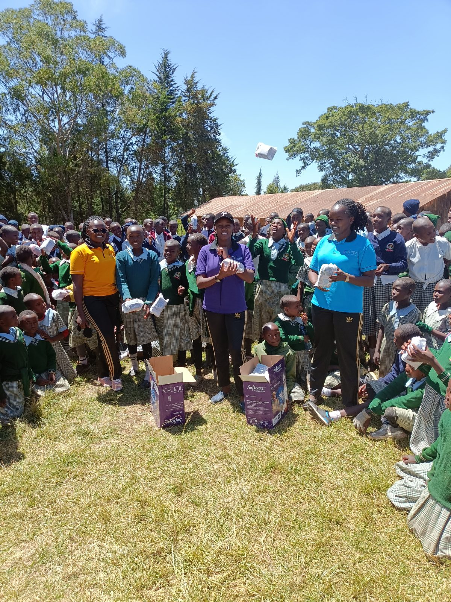
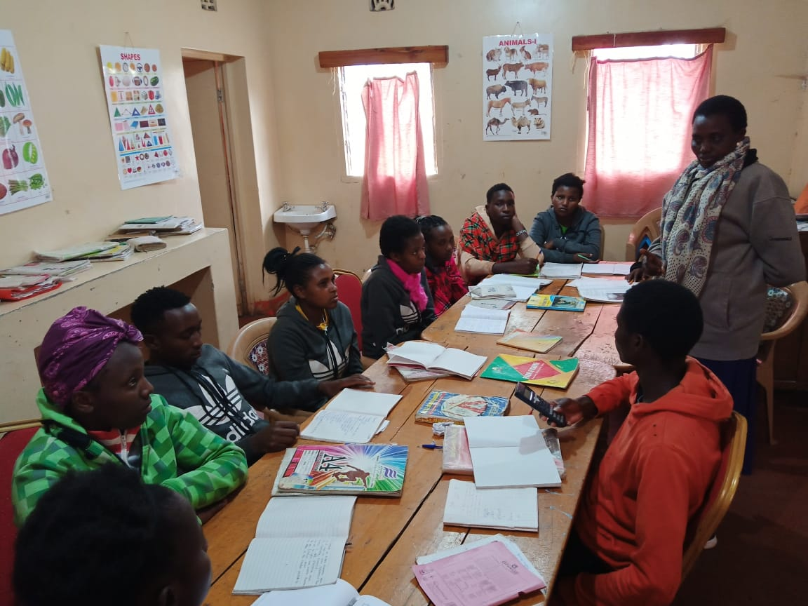

Care, protection and opportunity for every child.
Every child deserves to be seen, valued and supported. Our five programmes are connected: a child may need healthcare, education, protection and a stable home at different points in their journey.
Five connected ways we support children
Choose a programme to see how we help.


Supporting ability. Restoring possibility.
Namelok supports children living with disabilities to access medical treatment, physiotherapy and rehabilitation that can improve their wellbeing, mobility and participation in everyday life.
Children living with disabilities may face barriers to healthcare, mobility, education and inclusion. We work to connect children with appropriate medical care and rehabilitation support, while encouraging their dignity, independence and participation.
Care that recognises every child's potential
- 01
Medical treatment and referrals
We help children access medical attention and appropriate treatment, including support to navigate care and follow-up needs.
- 02
Physiotherapy and rehabilitation
We support access to physiotherapy and rehabilitation services that can help children develop or maintain movement, function and everyday skills.
- 03
Mobility and assistive support
Where needed, we support access to mobility-related assistance and equipment, helping children participate more fully at home, at school and in the community.
- 04
Family support and inclusion
We recognise the role of families and caregivers and promote understanding, dignity and inclusion for children living with disabilities.


Every child deserves the chance to learn and thrive.
We support children to access education that recognises their abilities, responds to their needs and opens pathways to a more independent future.
Education is a right and a powerful pathway to opportunity. Namelok supports children living with disabilities and other vulnerable children to access learning in special-needs and mainstream school settings, according to each child's abilities and circumstances.
Making learning more accessible
- 01
School access and scholarships
We support access to schooling through scholarships and assistance with essential education needs, helping reduce barriers that can interrupt a child's learning.
- 02
Inclusive learning environments
We value learning environments that recognise each child's strengths and support their participation, development and sense of belonging.
- 03
Learning materials and school support
We help address practical barriers to education so children can attend school and take part in learning with greater confidence.
- 04
Encouragement and continued learning
We encourage children to keep learning, growing and exploring their interests, with support that looks beyond immediate school attendance.


Protecting girls. Opening doors to new futures.
We support girls at risk of or escaping female genital mutilation (FGM), early marriage and other forms of abuse, helping them find safety, care and renewed opportunities.
No girl should have to choose between her safety and her future. Namelok provides support for girls affected by harmful practices and vulnerability, with a focus on protection, shelter, counselling and continued education.
A safe path forward, with support at every step
- 01
Safety and shelter
We provide a safer, supportive environment for girls who need protection from FGM, early marriage and unsafe circumstances.
- 02
Counselling and emotional support
We offer care and support that helps girls begin to rebuild confidence, feel heard and move forward at their own pace.
- 03
Education and future opportunities
We support girls to continue their education and pursue opportunities that help them shape their own futures.
- 04
Community awareness and prevention
Through outreach and engagement, we encourage conversations that challenge harmful practices and strengthen community responsibility for girls' safety.


A place to feel safe, valued and supported.
A safe home is more than shelter. It is a place where children can receive care, build relationships, continue learning and experience the stability they need to grow.
Namelok Naretoi Home provides a caring environment for vulnerable children, including children living with disabilities and girls who need protection. We recognise that children's wellbeing depends on more than one service: it takes consistent care, safety, education and a sense of belonging.
Supporting the whole child
- 01
A stable and caring environment
We provide a place where children can feel welcomed, protected and supported by people who care about their wellbeing.
- 02
Daily care and essential needs
We work to meet children's day-to-day needs and provide the practical support that helps them feel secure and cared for.
- 03
Education, health and development
We connect care at the home with wider support for healthcare, rehabilitation, education and personal development.
- 04
Dignity, belonging and participation
We encourage every child to take part, develop relationships and be recognised for who they are and what they can do.


Working together to create safer, stronger communities.
Lasting change happens when children, families, schools and communities are part of the solution. Namelok brings people together through outreach, awareness and mentorship.
Our work reaches beyond the children directly supported at the home. Through school visits, workshops, community conversations and volunteer engagement, we encourage positive change and help young people see new possibilities.
Taking care and awareness beyond the home
- 01
School outreach and awareness
We engage with schools and young people on children's rights, protection, harmful practices and the importance of education and inclusion.
- 02
Workshops and learning
We welcome workshop speakers and contributors who can share knowledge, practical skills and experiences that encourage young people.
- 03
Mentorship and role models
We connect children and young people with positive role models who can listen, encourage them and help them imagine what is possible.
- 04
Volunteering and community partnership
We welcome people and organisations who want to contribute time, skills, resources and support to the wellbeing of children.
Our approach is grounded in dignity, inclusion and the belief that every child deserves the opportunity to thrive.